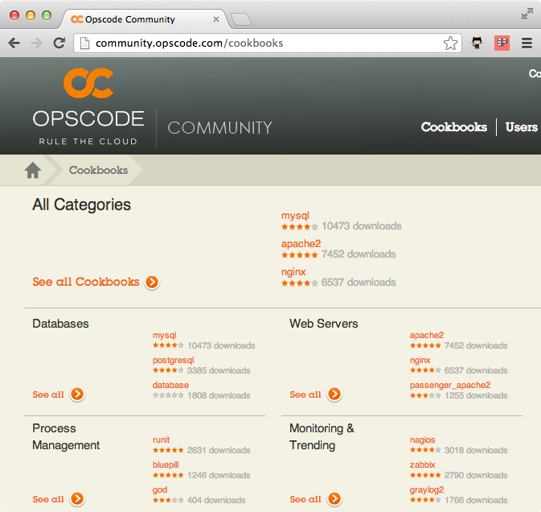

Starting with Chef can be difficult. There are a few tricky concepts to grasp and some new terminology to learn. This work in progress book gradually introduces you to Chef without throwing you in at the deep end.
If you find any issues with this book or have any suggestions of things you'd like to change please submit an issue or pull request over at our Github page.
We'll start with the simplest way to use Chef. It's called chef-solo. This allows you to install, configure and manage the packages required by your application. We'll start with the common scenario that you're a website developer that wants to deploy your new PHP application to a cloud web server.
Every time you have to setup a web server you have to remember loads of installation commands, edit configuration files and generally you always forget how to do something and it takes ages. Wouldn't it be nice if this was all entirely automated? With Chef we can keep our infrastructure as code alongside our applications.
So before we start, we need somewhere test our code. We'll introduce you to tools that help you manage your Chef development and testing later in the book but for now we'll just need root access to a fresh install of Ubuntu.
There are more than few providers of cloud instances but we favour Rackspace, if you sign up here we'll get some affiliate revenue that will help fund our writing of future guides. Once you've signed up, fire up an Ubuntu instance.
Of course you can install Ubuntu in a virtual machine if preferred. If you do, create a snapshot now so we can re-use a fresh installation for later examples.
SSH to your vanilla Ubuntu box and run the following command to install Chef. This used to be a more involved process but thanks to the new omnibus installer it couldn't be simpler.
root@intro:~# sudo true && curl -L https://www.opscode.com/chef/install.sh | sudo bash
Confirm Chef has successfully installed.
root@intro:~# chef-solo -v Chef: 11.2.0
Of course, your version number may be different.
So, what do we need to do to get our web server up and running?
How do we do that? We write our first Chef cookbook. But before we do that we should setup a file structure that will help us organise our various Chef files. Opscode, the makers of Chef provide one. They call it simply the Chef Repository.
root@intro:~# wget http://github.com/opscode/chef-repo/tarball/master root@intro:~# tar -zxf master root@intro:~# mv opscode-chef-repo* chef-repo
If we look inside the chef-repo directory we can see the following:
root@intro:~# cd chef-repo/ root@intro:~/chef-repo# ls certificates chefignore config cookbooks data_bags environments LICENSE Rakefile README.md roles
Our Chef cookbook should unsurprisingly reside within the cookbooks directory. We're going to call it "phpapp". We can use the command knife to help us manage our cookbooks. First we should tell knife where to find our cookbooks directory.
root@intro:~/chef-repo# mkdir .chef root@intro:~/chef-repo# echo "cookbook_path [ '/root/chef-repo/cookbooks' ]" > .chef/knife.rb
Now we'll ask knife to create our "phpapp" cookbook.
root@intro:~/chef-repo# knife cookbook create phpapp ** Creating cookbook phpapp ** Creating README for cookbook: phpapp ** Creating CHANGELOG for cookbook: phpapp ** Creating metadata for cookbook: phpapp
So let's look at what knife has created.
root@intro:~/chef-repo# cd cookbooks/phpapp root@intro:~/chef-repo/cookbooks/phpapp# ls attributes CHANGELOG.md definitions files libraries metadata.rb providers README.md
recipes resources templates
So now we'd need write our cookbook to install and configure Apache, MySQL and PHP. How do we do that? Well, thanks to the open source nature of Chef, we don't have to. Welcome to the Opscode Community cookbook site.

Here you'll find lots of well crafted, tested and battle hardened cookbooks that will do most of the work for you. Think of them as libraries you will use inside your code. We'll start with the apache2 cookbook. There's no need to manually download it from the community site, knife has this functionality built in.
root@intro:~/chef-repo/cookbooks/phpapp# cd .. root@intro:~/chef-repo/cookbooks# knife cookbook site download apache2 Downloading apache2 from the cookbooks site at version 1.5.0 to /root/chef-repo/cookbooks/apache2-1.5.0.tar.gz Cookbook saved: /root/chef-repo/cookbooks/apache2-1.5.0.tar.gz root@intro:~/chef-repo/cookbooks# tar zxf apache2-1.5.0.tar.gz root@intro:~/chef-repo/cookbooks# rm apache2-1.5.0.tar.gz
Of course, your version number may be different.
Let's go back into our cookbook.
root@intro:~/chef-repo/cookbooks# cd phpapp
Open metadata.rb in your text editor.
name 'phpapp' maintainer 'YOUR_COMPANY_NAME' maintainer_email 'YOUR_EMAIL' license 'All rights reserved' description 'Installs/Configures phpapp' long_description IO.read(File.join(File.dirname(__FILE__), 'README.md')) version '0.1.0'
Open recipes/default.rb in your favourite editor.